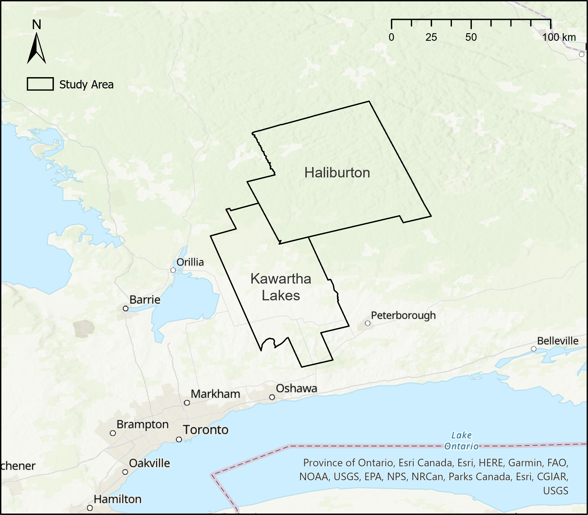

Perry Do - Igraine Strelley - Rebecca Wilkins
Short description
Mapping sources of food to be donated, in the goal of supplying local food security agencies with opportunities to harvest from participating private landowners and raise awareness to underserved areas.
Abstract
The focus is supplying food security agencies with the opportunities to harvest donated fruits and vegetables from participating private landowners instead of encouraging the public to forage for wild food. This involved updating the existing web application to help increase participation from private landowners, streamline the donation process, raise awareness of local food disparity and identify underserved areas through spatial analysis. Furthermore, data security will be implemented to protect the privacy of participating landowners, and ensure that members of the community do not harvest on private lands without consent.
Background
The matter of food insecurity has been a constant through the years for many families in Canada. Research from Canada Community Health Surveys showed an increase in households facing food insecurity, from 3.4 million in 2007-2008 to 4.4 million in 2017- 2018. A 2019 survey determined that 14% of households in the Kawartha Lakes area are facing this problem, higher than the provincial average of 13%. Local food banks and related agencies have worked to provide food stuffs to many individuals each year, relying primarily on donations from the public and organizations. Recently, these agencies have reported an increase in families relying on their support, thus increasing their need for food supplies. This Kawartha Lakes and Haliburton Harvest Sharing Program was created with the ambition to reduce potential food waste from local growers. Providing a platform to donate excess harvests from consenting private landowners and farmers within these regions by connecting them to the Kawartha Lakes and Haliburton Country Roundtable for Ending Poverty.
Previous efforts towards this project were completed by Fleming College Forestry students and more notably 2021 Fleming GIS Students, who delivered an open-source web map application and submission form designed to allow the public to submit locations of wild fruit trees and other edible vegetation on public lands. In addition to the map, the webpage from last year also provided resources for harvesting, recipes, and a user guide.
Client
City of Kawartha Lakes and Haliburton County Roundtable for Ending Poverty, represented by Liza Hancock. Project Deliverables (notably Objective 2) to be managed by Marina Hodson.
Study Area

Objective 1: Survey123 & Volunteer Sign Up
Provide a way for users to submit information about fruit trees and vegetable harvest on their lands and provide a way for volunteer harvesters to sign-up for the program.
Objective 2: ArcGIS Online Web Maps
Provide the client with a private online map in order to show the fruit trees and vegetables that users have submitted. Also providing an AGOL web map of food source locations for public viewing.
Objective 3: Perform Spatial Analysis
Provide a way for users to access useful information about the project. In order to help our client increase awareness of local poverty, it will be useful to have a map showing the information on poverty and food program accessibility in the area.
Objective 4: New Website
Create an attractive website for the client to host their information about food poverty, social awareness, etc. This will help the client achieve their non-GIS goals by providing them with a public platform to post resources on, and access to the submission forms.
York University Master of Geography and Fleming College GIS Applications Specialist graduate
University of Ottawa BSc. Biology and Environmental Sciences and Fleming College GIS Applications Specialist graduate
Trent University BA. Hons. Anthropology and Fleming College GIS Applications Specialist graduate